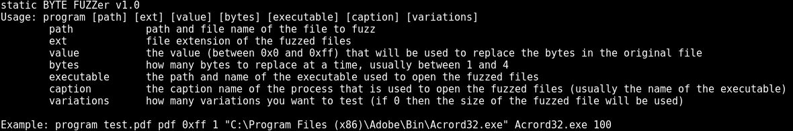
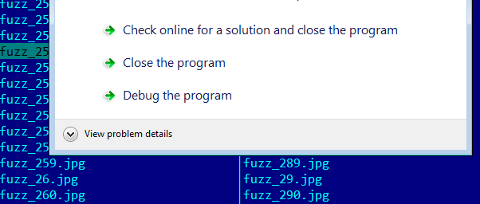
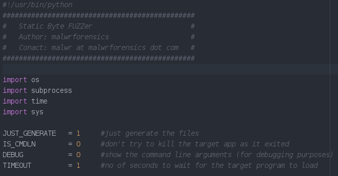

ByteFUZZ is a file format fuzzer that can do blind fuzzing, by replacing bytes from the original/seed file.
Once the files are generated, it will call the target program with the fuzzed files as arguments and check to see if there is a crash.

Let's see it in action :)

If you want to just generate the files or test a command line app, then there are a few global variables that can be set.

Here you can find the code on github.